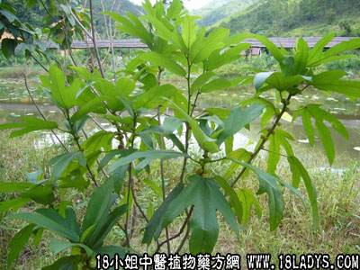

五爪龙(中药材植物名:粗叶五爪龙)(植物科目:桑科)

植物名：粗叶五爪龙。
生长环境：本品为灌木。生长于山野荒林中，或水沟两岸。
分布：广东各地皆有。
入药部分：根。
采集期：全年。
自采地点：山岗。
性味：性平、味甘、气香。
功能：顺气止咳、除痰。
主治、用量和用法：1、苦伤：用根1～2两，清水煎服；2、劳伤咳血；3、肺燥咳；4、痰火核，均用法同上。
验方1：（治内伤咳、燥咳方）五爪龙、红菱根、牛大力、铁色金各5钱（加蜜枣猪瘦肉亦可），清水三碗煎成一碗，温服。
（方解）内伤咳嗽，易见咯血，因瘀积、肺燥、气逆而成，宜清肺散瘀、理气主法治之。本方清肺凉血、散瘀，有红菱根、铁色金；顺气止咳有五爪龙、牛大力。全方药性和平，单纯肺燥而咳者，亦可用之。
（方歌）内伤燥咳五爪龙，牛大力破铁色金，红菱蜜枣猪瘦肉，煎汤频服见功深。
验方2：（治痰火核方）五爪龙1两、苦灯笼根5钱、风栗壳1两、清水四碗，煎成一碗服，温服。
（方解）本方为苦凉泄热、化气、消坚之剂，如五爪龙、苦灯笼化气、消坚；风栗壳苦凉泄热。用治痰湿化火，积聚成核者有效。
（方歌）治痰火核五爪龙，风栗壳与苦灯笼，苦寒泄热兼散结，煎服数剂力为雄。
参考资料：《广州常用草药验方集解》防治劳倦经验方：五爪龙、千斤拔、黑老虎，每味5钱至1两，清水煎服，或浸酒常服。
（方解）本方五爪龙化气，千斤拔强腰身，黑老虎祛风湿，舒筋活络，构成祛风湿、强腰肾、固筋骨、防治劳倦之剂。全方药性和平、不凉不燥，并可治疗跌打。
（方歌）过度掺劳五爪龙，千斤一拔去疲劳，黑虎用来舒筋络。防劳去倦此方苏。
《广东中医》（1961年第2期）广州中医院下乡医防队第二队，在罗定县平治公社用五爪龙汤治疗营养性水肿（虚性水肿），效果良好。一般3～9天症状消失。处方：五爪龙6钱、豆豉羌1钱，为成人一日量，水九碗煎至二碗（约煎四小时），早晚各服一碗，此汤必须文火煎服。